プレス金型の設計製作／プレス部品加工
絞りにくい材料を、
絞ります。
ダイヤプレスは、プレス金型の設計製作とプレス部品加工の会社です。パーマロイ、インコネル600、リン青銅。ふつうの鋼板とは伸び方の違う材料を、順送や単発の絞りで形にしてきました。板厚0.06mmのステンレスから、φ5×高さ30mmの超深絞りまで。
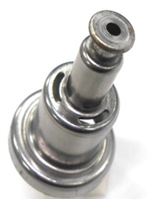
超深絞り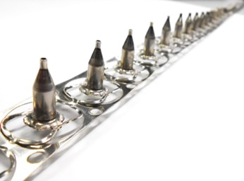
インコネル600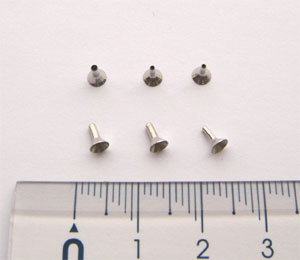
医療精密部品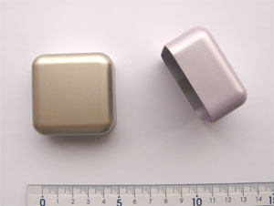
マグネシウム
- 0.06mm最薄板厚（医療部品）
- 30mm超深絞り高さ（φ5）
- 75名従業員数
- 4拠点川崎・岩手2工場・比国
難材のプレス
材料で断らない、
というのが仕事です。
プレスは材料の伸びで成り立つ加工です。伸びない材料、硬い材料、薄すぎる材料はそれぞれ別の難しさがあります。当社が引き受けてきたのは、その「別の難しさ」がある側です。
-
特殊金属
パーマロイ／インコネル600
磁性材と耐熱合金。どちらも普通鋼のようには流れません。順送で絞り切ります。
-
深さ
超深絞り
φ5に対して高さ30mm。3段絞りを重ね、先端は潰し加工で仕上げます。
-
薄さ
医療関連 精密部品
板厚0.06〜0.13mmのステンレス。破れる寸前の薄さを絞ります。
-
新素材
マグネシウム／チタン
板材からの成形をサーボプレスで。温間・冷間の2通りを使い分けます。
製品情報
実物と、その条件。
材質・板厚・工程・用途まで書き添えています。ご自分の図面と見比べてください。
特殊金属絞り加工品
-
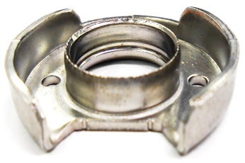
- 材質
- パーマロイ
- 板厚
- 1.05 mm
- 工程
- 順送加工
- 用途
- ガス関連
-
- 材質
- インコネル600
- 板厚
- 0.2 mm
- 工程
- 順送加工
- 用途
- ガス関連
絞り先端径 1.0mm
超深絞り加工品
-
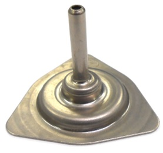
- 材質
- SPCE
- 板厚
- 0.8 mm
- 工程
- 単発加工
- 用途
- 車載（燃料系）
φ5 × 高さ30mm の深絞り製品
-
- 材質
- SPCE
- 板厚
- 0.8 mm
- 工程
- 順送加工＋単発加工
- 用途
- 車載（燃料系）
3段絞りに加えて、先端潰し加工にて形状製作
医療関連精密部品
-
- 材質
- ステンレス
- 板厚
- 0.06 〜 0.13 mm
- 工程
- 絞り加工
非鉄金属バネ材加工品
-
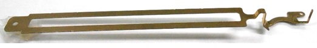
- 材質
- リン青銅
- 板厚
- 0.3 mm
- 工程
- 順送加工
- 用途
- 車載電装部品
複数の段曲げ。長さ 120mm
研究開発
ダイキャストを、
プレスに置き換える。
近年、様々な分野でマグネシウムなどの新素材を使った製品が開発されています。当社でも数年前より、マグネシウムやチタンの板材から成形品を加工する技術を確立すべく、岩手県、岩手大学、材料メーカーと協力して研究を重ねてきました。
当社の加工は温間と冷間で行う方法の2種類を採用しており、サーボプレスを使用して加工を行っています。
現行では主流となっているダイキャスト法と比べても、同じ数量の物を作るなら金型数が削減でき、なおかつ時間あたりの出来高も上がります（一定数量以上であれば）。現在は板材の圧延技術も進歩してきて従来の値段から下落する事も予想され、そうなれば益々他の加工法と差がなくなります。
当社はお客様から頂いた宿題を現実なものにするため、検討を重ね協力いたします。マグネシウム、チタンのプレス化についてのご相談をお待ちしております。
試作品の紹介
-
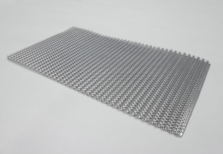
放熱オフセットフィン
アルミ 板厚0.2mm × 高さ2.4mm
-
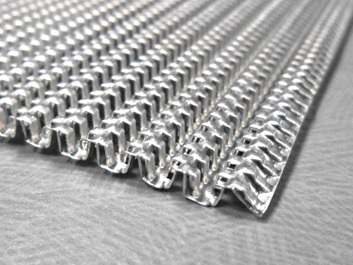
放熱オフセットフィン（拡大）
細かなピッチの折り返し形状
-
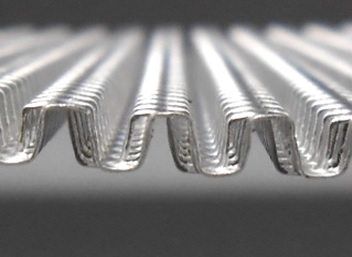
オフセットフィン（断面）
折り曲げの立ち上がり形状
-
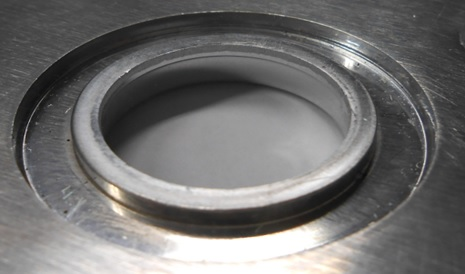
潰し加工
アルミ 板厚5.0mm × 凹2.0mm
工場・設備
岩手に、二つ。
製造は岩手県八幡平市。プレスから金型製作、検査までを両工場に備えています。いずれも ISO 9001・ISO 14001 認証取得工場です。
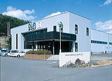
岩手工場
技術部門／製造部門／品質管理部門／営業部門
- 所在地
- 〒028-7111 岩手県八幡平市大更2-154-18
- 電話
- 0195-75-1511 ／ Fax. 0195-75-1513
- 敷地総面積
- 8,700 m²
- 工場総面積
- 3,300 m²
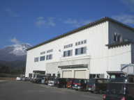
岩手第二工場
製造部門／品質管理部門
- 所在地
- 〒028-7111 岩手県八幡平市大更1-205
- 電話
- 0195-70-1370 ／ Fax. 0195-70-1377
- 敷地総面積
- 8,500 m²
- 工場総面積
- 4,160 m²
岩手工場 設備
| 区分 | 設備 | 台数 | メーカー |
|---|---|---|---|
| プレス関連 | 35t | 4 | アイダ |
| 45t | 3 | アイダ | |
| 60t | 6 | アイダ | |
| 80t | 4 | アイダ | |
| 110t | 1 | アイダ | |
| 110t | 1 | アマダ | |
| 160t | 2 | アイダ | |
| 250t | 1 | アイダ | |
| PMX 300t | 1 | アイダ | |
| 金型関連 | マシニングセンター | 3 | オークマ |
| 成形研磨機 | 3 | 三井 | |
| 湿式研磨機 | 2 | 岡本 | |
| ワイヤーカット | 5 | ソディック | |
| 放電加工機 | 1 | ソディック | |
| 細穴放電加工機 | 1 | ソディック | |
| テンパー炉 | 1 | サーマル | |
| 電気炉 | 1 | サーマル | |
| CAD | 6 | C&G | |
| スポット溶接機 | 4 | 中央製作所 | |
| 検査関連 | 三次元測定機 | 1 | ミツトヨ |
| 三次元画像測定器 | 1 | ニコン | |
| 投影機 | 1 | ミツトヨ | |
| 万能試験機 | 1 | アイコー | |
| その他 | 脱脂洗浄機 | 1 | 佐藤機械 |
| 回転バレル機 | 3 | — | |
| 振動バレル機 | 4 | — | |
| 高速回転バレル機 | 1 | — |
岩手第二工場 設備
| 区分 | 設備 | 台数 | メーカー |
|---|---|---|---|
| プレス関連 | 30t | 3 | 山田ドビー |
| 35t | 1 | コマツ | |
| 45t | 1 | 山田ドビー | |
| 80t | 1 | アイダ | |
| 200t | 2 | アイダ | |
| 250t | 2 | アマダ | |
| 金型関連 | フライス | 1 | マキノ |
| 成形研磨機 | 2 | 三井 | |
| ワイヤーカット | 2 | ソディック | |
| CAD | 1 | C&G | |
| 検査関連 | 輪郭形状測定機 | 1 | ミツトヨ |
| 真円度測定器 | 1 | ミツトヨ | |
| 表面粗さ測定器 | 1 | 東京精密 | |
| 投影機 | 1 | ミツトヨ | |
| 二次元画像測定器 | 1 | キーエンス | |
| その他 | NC旋盤 | 10 | テクノワシノ |
| 自動洗浄装置 | 1 | ジャパンフィールド | |
| 多軸タップ盤 | 4 | TOYOSK |
主要取引先
35社と、続いています。
車載、半導体、医療、住宅設備。難しい材料を扱うぶん、分野は広がります。（五十音順）
- アイシン東北株式会社
- キオクシア株式会社
- 株式会社ケー・アイ・ケー
- 株式会社芝浦電子
- テルモ株式会社
- 東北日発株式会社
- 日立Astemo株式会社
- 株式会社不二工機
- 株式会社ミクニ
- 美和ロック株式会社
- 他25社
グループ
- DIUP, INC.フィリピン共和国・ラグナ州／2000年6月21日設立／金属金型設計製作および金属プレス加工全般
- 株式会社まるか金属国内関連企業
- 株式会社スリーエス国内関連企業
よくあるご質問
はじめての方へ
どのくらい深く絞れますか。
SPCE 板厚0.8mm で φ5×高さ30mm の深絞り実績があります。3段絞りに加えて先端潰し加工を行う形状にも対応しています。
パーマロイやインコネルも絞れますか。
対応しています。パーマロイ 板厚1.05mm、インコネル600 板厚0.2mm（絞り先端径1.0mm）の順送加工実績があります。いずれもガス関連用途です。
薄い材料はどこまで扱えますか。
医療関連精密部品では、板厚0.06〜0.13mm のステンレス材を使用した絞り加工を行っています。
マグネシウムやチタンのプレス加工はできますか。
岩手県・岩手大学・材料メーカーと協力し、板材からの成形技術の確立に取り組んできました。温間と冷間の2種類の方法をサーボプレスで行っています。ダイキャスト法と比べ、一定数量以上であれば金型数を削減でき、時間あたりの出来高も上がります。ご相談をお待ちしています。
金型からお願いできますか。
プレス金型の設計製作が事業目的の柱です。マシニングセンター、ワイヤーカット、放電加工機、CAD を自社に備えています。
会社概要
株式会社ダイヤプレス
- 商号
- 株式会社ダイヤプレス（DIA PRESS Co., Ltd.）
- 設立年月日
- 1984年（昭和59年）6月1日
- 資本金
- 9,900万円
- 事業目的
- プレス金型の設計製作 及び プレス部品加工
- 従業員数
- 75名（2022年7月1日現在）
- 会社役員
- 代表取締役 後閑 信夫
専務取締役 糟川 浩昭
取締役 遠藤 和宏／千葉 博幸／倉又 健 - 川崎事務所
- 〒214-0022 神奈川県川崎市多摩区堰3-16-11-201
Tel. 044-833-5235 ／ Fax. 044-833-5236 - 岩手工場
- 〒028-7111 岩手県八幡平市大更2-154-18
Tel. 0195-75-1511 - 岩手第二工場
- 〒028-7111 岩手県八幡平市大更1-205
Tel. 0195-70-1370 - 認証
- ISO 9001／ISO 14001（岩手工場・岩手第二工場）
- 取引先銀行
- 日本政策金融公庫／商工中金／岩手県信用農業協同組合連合会／りそな銀行／三菱UFJ銀行／七十七銀行／東北銀行／岩手銀行
難しい材料ほど、ご相談ください。
材質・板厚・形状をお知らせいただければ、絞れるかどうかをお答えします。マグネシウム・チタンのプレス化のご相談も歓迎します。